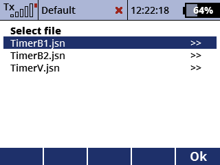
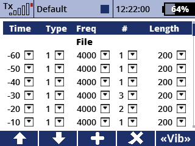

Comfortable editor for the timer signalization profiles 'Beep 1', 'Beep 2' and 'Voice'.
 
Beeps and audio files can be added, deleted and swapped. Beeps have a customizable frequency, duration and number of repititions.
Type 1: beep, type 2: audio file
Select on of the three files that contain the signalization profiles.
Edit, add, delete and swap the elements.
Close the form to apply changes.
Restart the transmitter for the changes to take effect.